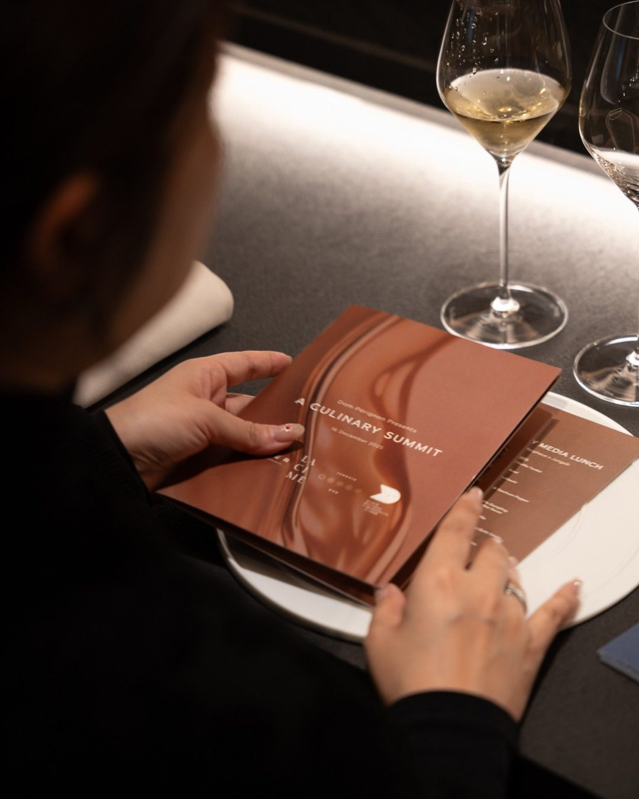
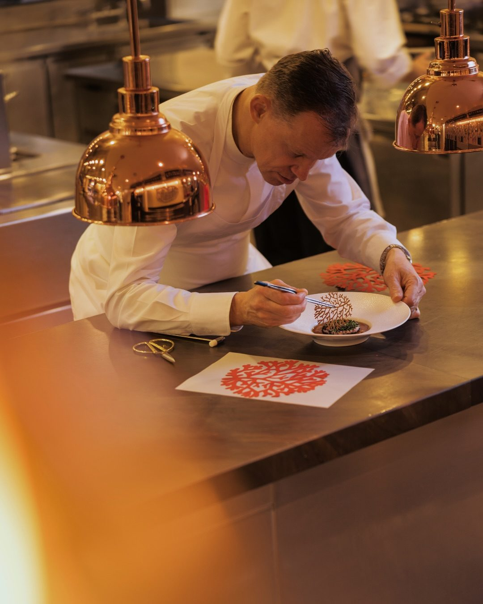
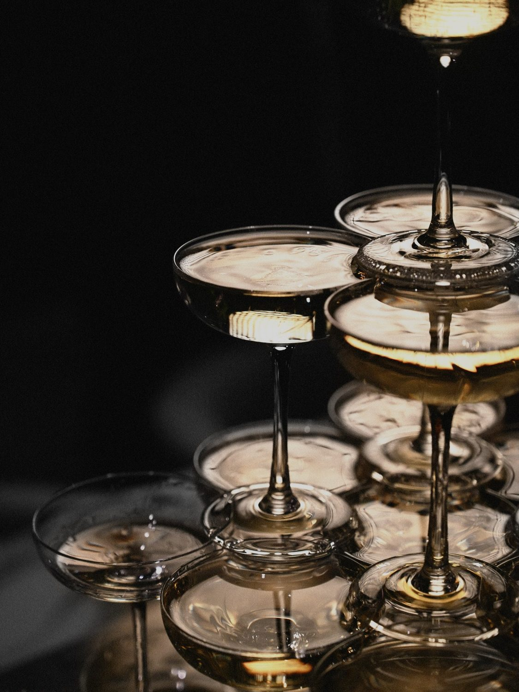
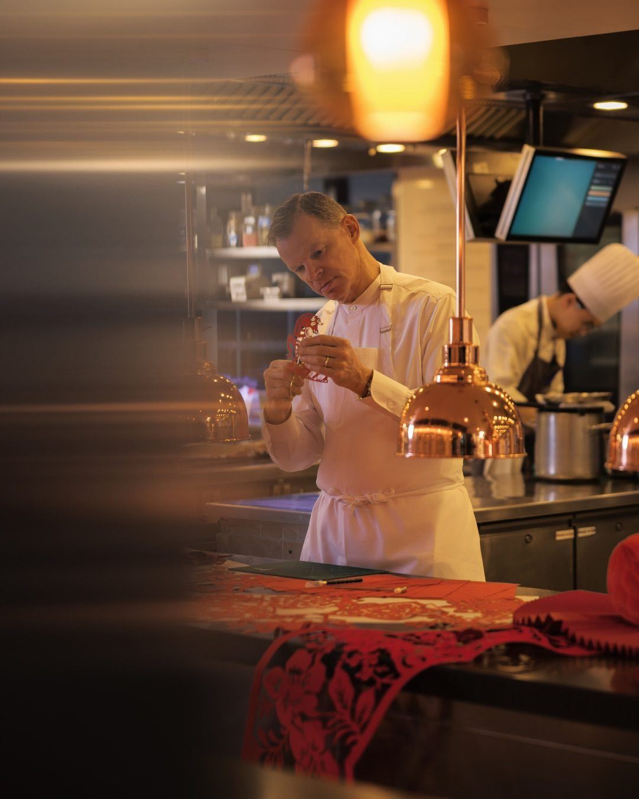

酒店餐饮的部门名，几十年来都叫 F&B，Food & Beverage。它的编制位置很明确：配套部门，成本中心，考核出餐速度与食材成本。总经理看报表时，它和客房、宴会并列，但从不单独出现在品牌叙事里。
11 月 2 日，文华东方把这个名字换掉了。新的叫 RB&E，Restaurants, Bars & Experiences。集团餐饮总监 Christian Gradnitzer 的解释是：客人不再只是出门吃一顿饭，而是在决定这段时间怎么过。这句话听起来像广告语，但集团随后公布的三件事，把它落成了结构。

01｜一个部门，变成一条业务线
第一件事是编制。集团为 RB&E 设立了欧洲与美洲区域的运营总监，由 James Norman 出任，履历横跨丽思卡尔顿、凯宾斯基与文华东方。一个部门升格为业务线，标志不是换了名字，而是有了跨区域的管理层、独立的客群定义和独立的收入目标。
第二件事是资产。香港文华东方正在分阶段翻新，完成后会落成 14 个餐饮、酒吧与体验空间。翻新期间先开的两家已经在 11 月 2 日营业：The Pizza Bar by Daniele 与 Thistle & Jade，随后还有 Blake Foyer。原有的 Terrace Boulud 保留。把 14 个空间当作一个产品组合来做，而不是 14 个酒店配套，这是 RB&E 与 F&B 最实质的差别。
第三件事是海外样本。马略卡的文华东方 Punta Negra 把 Leña、Matsuhisa、Sobretaula 与 Jacinta 四家店打包成度假村的核心体验，定位不是“酒店里有四间餐厅”，而是“为这四间餐厅来住这家酒店”。

02｜33 颗星，第一次被当成资产
集团公布的数字是 33 颗米其林星，分布在旗下餐饮空间。这个数字此前从未被作为品牌资产整体对外表述。
拆开看，星级分布很集中：深圳 The Bay by Chef Fei 两星，同城的 OPUS by Alessio Durante 一星；广州 Jiang by Chef Fei 两星；维也纳用 Le Sept、Atelier 7 Brasserie、Atelier 7 The Café 与 Atelier 7 Izakaya & Bar 四个概念叠出一个完整餐饮目的地。
星在这里的作用不是荣誉墙，而是定价与招商的工具。米其林给的是单体餐厅的信用，酒店集团把它汇总成品牌信用，再用这个信用去谈主厨合作、去说服本地客人“值得专程来一趟”。这也是为什么 RB&E 要强调“每一家都要有身份、有客群、有再来的理由”，因为星只对具体餐厅有效，对部门无效。
03｜为什么是现在
推动这次改制的，是三个同时发生的变化。
第一，房价拉不开差距。同城奢华酒店的房价与房型越来越接近，RevPAR 的增长开始靠餐饮、水疗与活动来撑。房间不能一个月换一次，餐厅可以。

第二，本地客比住客更值钱。住客一年来一次，本地客一周能来两次。餐厅是酒店里唯一能接触到城市日常的部门，也是唯一能做复购的入口。把餐饮当配套，等于把这部分收入让给街上的独立餐厅。
第三，榜单与内容分发都在偏爱餐饮。米其林星、50 Best Bars 给餐厅的曝光远超客房；社交平台上，没有人拍大堂，所有人拍盘子。餐饮成了酒店最容易获得自然流量的部分，而流量在今天等同于获客成本。
04｜账本怎么变
改制的实质，是三张账一起换。
考核换了：过去看食材成本率与出餐效率，现在要看翻台、本地客占比、复购与单店坪效。对手换了：过去是隔壁酒店的餐厅，现在是全城最强的独立餐厅。人换了：主厨、调酒师、侍酒师从后厨员工，变成可以被传播、被挖角、被写进合同的招牌。
代价也清楚。餐饮的毛利结构比客房薄，人力密度高，本地化运营难度大。14 个空间同时开业，考验的不是厨房，而是招聘、培训与供应链。这也是 RB&E 需要区域总监的原因：它已经不是一个部门能管住的复杂度。

05｜同款在发生
同一个月，香港瑰丽与 Bar Leone 的合作酒吧 Bar Camillo 定档 11 月 25 日。两家“世界第一”塞进同一栋楼：瑰丽是 50 Best Hotels 的两连冠，Bar Leone 是 50 Best Bars 的两连冠。
这不是巧合。当房价卷不动了，餐饮就成了新的差异化；当客人开始为一家餐厅选一家酒店，酒店的餐饮就必须按目的地的标准来做，而不是按配套的标准。
我们的判断是：RB&E 会不会成功，不看官宣文案，看两个数。一是 14 个空间里本地客的比例，二是这些空间在酒店总收入里的占比。前者证明它真的进了城市，后者证明它真的成了业务。这两个数字，最快也要等到 2027 年的财报季才看得见。
事实核对：文华东方于 2026 年 11 月 2 日在香港宣布将 Food & Beverage 更名为 Restaurants, Bars & Experiences，集团餐饮总监为 Christian Gradnitzer，并任命 James Norman 为欧洲及美洲区域 RB&E 运营总监；集团餐饮空间累计 33 颗米其林星；香港文华东方翻新后将落成 14 个餐饮、酒吧与体验空间，The Pizza Bar by Daniele 与 Thistle & Jade 于 11 月 2 日开业，Blake Foyer 随后开放；马略卡 Punta Negra 含 Leña、Matsuhisa、Sobretaula、Jacinta 四家餐厅；集团现运营 47 家酒店、16 处住宅、44 处 Exceptional Homes，覆盖 30 个国家与地区；香港瑰丽与 Bar Leone 合作的 Bar Camillo 定档 11 月 25 日。来源：Mandarin Oriental 新闻中心（2026.11.02）、Time Out Hong Kong、Bar Magazine。
curiohood · Stay Curious